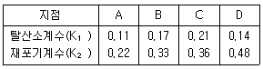
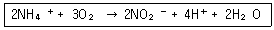
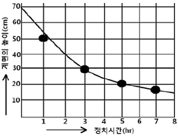
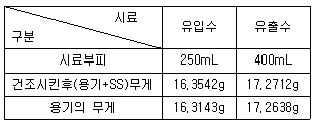
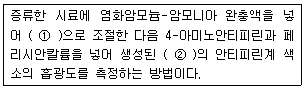
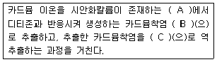
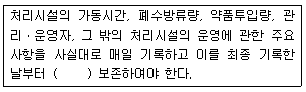
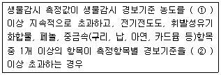

수질환경산업기사 (2008-07-27 기출문제)
1과목: 수질오염개론
1. Ca+2 가 20mg/L, Mg+2가 36mg/L이 포함된 물의 경도는? (단, Ca의 원자량 40, Mg의 원자량 24)
- 50mg/L as CaCO3
- 100mg/L as CaCO3
- 150mg/L as CaCO3
- 200mg/L as CaCO3
(정답률: 알수없음)

2. 어느 1차반응에서 반응개시의 농도가 220mg/L이고 반응 1시간 후의 농도는 94mg/L이었다면 반응 4시간 후의 반응물질의 농도는?
- 3.4mg/L
- 7.3mg/L
- 12.6mg/L
- 18.2mg/L
(정답률: 알수없음)
3. 농업용수의 수질 평가시 사용되는 SAR(Sodium Adsorption Ratio) 산출식에 관련된 원소로만 짝지어진 것은?
- Na, Ca, Mg
- Mg, Ca, Fe
- K, Ca, Mg
- Na, Al, Mg
(정답률: 알수없음)
4. 2M-HCl 용액 200mL 속에 순수한 HCl은 몇 g 인가? (단, Cl = 35.5 임)
- 11.2g
- 12.6g
- 13.2g
- 14.6g
(정답률: 알수없음)
5. 물의 점성은 분자 상호 간의 인력 때문에 생기며 층간의 전단 응력으로 점성도를 나타내게 된다. 이러한 점성도는 수온과 불순물 농도에 따라 달라지는데 수온이 25℃에서 0℃로 감소하면 순수한 물의 점성도는?
- 2배로 증가한다.
- 4배로 증가한다.
- 6배로 증가한다.
- 8배로 증가한다.
(정답률: 알수없음)
6. 어느 하천의 상태가 다음 표와 같을 때, 자정능력이 가장 큰 지점은?

- A
- B
- C
- D
(정답률: 알수없음)
7. 유량 5m3/sec, BOD 2mg/L인 하천에 유량 5,000m3/day, BOD 500mg/L인 공장폐수를 처리하여 방류하고자 한다. 처리후 방류 된 공장폐수와 완전혼합된 하천의 BOD를 3mg/L이하로 유지하기 위해 필요한 공장폐수의 최소한의 BOD제거율(%)은?
- 82.1%
- 86.1%
- 90.1%
- 93.1%
(정답률: 알수없음)
8. 난용성염의 용해이온과의 관계, AmBn(aq) ↔ mA+(aq) + nB-(aq)에서 이온농도와 용해도적(Ksp)과의 관계 중 과포화상태로 침전이 생기는 상태를 옳게 나타낸 것은?
- [A+]m[B-]n ＞Ksp
- [A+]m[B-]n = Ksp
- [A+]m[B-]n＜ Ksp
- [A+]n[B-]m＜ Ksp
(정답률: 알수없음)
9. 용량 2000L인 물의 용존산소 농도가 9.2mg/L인 경우, Na2SO3로 물속의 용존산소를 완전히 제거 하려고 한다. 이론적으로 필요한 Na2SO3의 양은? (단, Na 원자량 : 23)
- 약 125g
- 약 135g
- 약 145g
- 약 155g
(정답률: 알수없음)
10. 0.2N-Ca(OH)2 100mL를 조제하려면 Ca(OH)2 몇 g 이 필요한가? (단, Ca(OH)2 분자량은 74)
- 0.37
- 3.7
- 0.74
- 7.4
(정답률: 알수없음)
11. 물의 물리, 화학적 특성으로 틀린 것은?
- 물은 수소와 산소의 공유결합 및 수소결합으로 되어 있다.
- 물 분자는 H+와 OH-로 극성을 이루므로 유용한 용매가 된다.
- 물은 표면장력과 융해열이 작아 광합성의 수소공여체로 사용 된다.
- 물은 비열이 커서 수온의 급격한 변화를 방지해 주므로 생물의 활동이 가능한 기온이 유지 된다.
(정답률: 알수없음)
12. 25℃, pH = 6.35인 용액에서 [OH-]이온 농도는?
- 약 4.2×10-6mol/L
- 약 3.2×10-7mol/L
- 약 2.2×10-8mol/L
- 약 1.2×10-9mol/L
(정답률: 알수없음)
13. 초산(CH3COOH) 300mg/L 용액의 pH = 3이다. 이 용액의 해리상수(Ka)는?
- 2×10-3
- 2×10-4
- 2×10-5
- 2×10-6
(정답률: 알수없음)
14. 수심이 깊은 호소에서 발생하는 성층현상에 관한 설명으로 틀린것은?
- 봄이 되면 얼음이 녹으면서 표수층의 수온이 올라가 4℃가 되면 최대밀도를 가지게 되어 아래로 이동하게 된다.
- 수온약층은 표수층에 비하여 수심에 따른 수온차이가 작다.
- 여름과 겨울에는 성층현상이 가을과 봄에는 전도현상이 나타난다.
- 호소의 성층현상은 기후특성, 호수저수용량에 따른 유입유출량의 크기, 호수의 크기 등 다양한 환경인자에 의해 영향을 받는다.
(정답률: 알수없음)
15. 어떤 하천수의 수온은 10℃이다. 20℃의 탈산소계수 K(상용대수)가 0.15/day 일 때 [BOD6/최종BOD]비는? (단, KT = K20 × 1.047T-20)
- 0.53
- 0.63
- 0.73
- 0.83
(정답률: 알수없음)
16. BOD5 가 213mg/L인 하수의 7일 동안 소모된 BOD는? (단, 탈산소 계수는 0.14/day(상용대수)이다.)
- 223mg/L
- 238mg/L
- 247mg/L
- 253mg/L
(정답률: 알수없음)
17. 박테리아의 경험적인 화학적 분자식은 C5H7O2N으로 알려져 있다. 5g의 박테리아가 산화될 때 소모되는 이론적 산소량은? (단, 이때 질소는 암모니아로 전환됨)
- 7.1g
- 9.4g
- 13.2g
- 16.2g
(정답률: 알수없음)
18. 다음의 질산화 과정에 주로 관계되는 질산화 미생물은?

- Nitrosomonas
- Nitrobacter
- Thiobacillus
- Leptothrix
(정답률: 알수없음)
19. 최종BOD(BODu)가 500mg/L이고, 소모 BOD5가 300mg/L일 때 탈산소 계수(base = 상용대수)는?
- 0.01/day
- 0.02/day
- 0.04/day
- 0.08/day
(정답률: 알수없음)
20. 98%의 농황산(비중 1.84) 100mL를 물 100mL에 희석한 용액 중의 황산의 무게중량 조성(W/W(%))은?
- 61.2
- 63.5
- 67.8
- 69.3
(정답률: 알수없음)
2과목: 수질오염방지기술
21. 폐수 3000m3/day에서 생성되는 1차 슬러지 부피(m3/day)는? (단, 1차 침전탱크 체류시간 2hr, 현탁고형물 제거효율 60%, 폐수 중 현탁 고형물 함유량 220mg/L, 발생 슬러지 비중 1.03, 슬러지 함수율 94%, 1차 침전 탱크에서 제거된 현탁 고형물 전량이 슬러지로 발생되는 것으로 가정)
- 약 4.8
- 약 5.2
- 약 6.4
- 약 7.1
(정답률: 알수없음)
22. 정수처리를 위한 침사지 내 평균유속의 표준 범위는?
- 2~7cm/sec
- 7~15cm/sec
- 15~30cm/sec
- 30~45cm/sec
(정답률: 알수없음)
23. 생물막을 이용한 하수처리방식인 접촉산화법의 특징 또는 장단점으로 틀린 것은?
- 분해속도가 낮은 기질제거에 효과적이다.
- 난분해성 물질 및 유해물질에 대한 내성이 크다.
- 미생물량과 영향인자를 정상상태로 유지하기 위한 조작이 용이하다.
- 슬러지 반송이 필요 없고 슬러지 발생량이 적으나 초기 건설비가 높다.
(정답률: 알수없음)
24. 유입하수량이 10,000m3/day, 유입 BOD가 200mg/L, 폭기조 용량 1000m3, 폭기조내 MLSS가 1750mg/L, BOD 제거율이 90%이고 BOD의 세포 합성율이 0.55 이며 슬러지의 자기 산화율이 0.08/day 일 때, 잉여슬러지 발생량은?
- 730kg/day
- 850kg/day
- 970kg/day
- 1090kg/day
(정답률: 알수없음)
25. 최종침전지에서 발생하는 침전성이 우수한 슬러지의 부상(Sludge rising) 원인을 가장 알맞게 설명한 것은?
- 침전조의 슬러지 압밀 작용에 의한다.
- 침전조의 탈질화 작용(denitrification)에 의한다.
- 침전조의 질산화 작용(nitrification)에 의한다.
- 사상균류(flamentus bacteria)의 출현에 의한다.
(정답률: 알수없음)
26. MLSS 농도가 2000mg/L인 혼합액을 1000mL 메스실린더에 취해 30분간 정치한 후의 침강슬러지가 차지하는 용적이 350mL이었다면 이 슬러지의 SDI는?
- 0.52
- 0.57
- 0.62
- 0.67
(정답률: 알수없음)
27. 6가 크롬이 250mg/L 함유된 폐수가 400m3/day 발생 된다. 이 폐수를 Na2SO3을 사용하여 환원처리 하고자 한다면 환원제의 1개월(30일) 소요량은? (단, 반응식은 2H2CrO4 + 3Na2SO3 + 3H2SO4 →Cr2(SO4)3 + 3Na2SO4 + 5H2O 원자량 - Na : 23, Cr : 52, S : 32)
- 9.2 ton
- 10.9 ton
- 18.4 ton
- 21.8 ton
(정답률: 알수없음)
28. 슬러지 개량(Conditioning)의 방법에는 약품처리, 열처리, 냉동, 방사선처리, 세척방법 등이 있다. 슬러지 개량을 행하는 주된 이유는?
- 탈수 특성을 좋게 하기 위해
- 고형화 특성을 좋게 하기 위해
- 탈취 특성을 좋게 하기 위해
- 살균 특성을 좋게 하기 위해
(정답률: 알수없음)
29. 폭이 5m, 길이가 15m, 수심이 3m인 침전지의 유효수심은 2.7m이고 유량은 2700m3/day이다. 침전지의 바닥에 슬러지가 유효수심의 2/5을 차지하고 있다면 침전지 유속은?
- 약 0.12m/min
- 약 0.17m/min
- 약 0.23m/min
- 약 0.28m/min
(정답률: 알수없음)
30. 농축조룰 설치하기 위해 회분침강 농축시험을 한 결과 아래와 같은 특성곡선을 얻었다. 슬러지의 초기농도가 20g/L 이면 5시간 정치 후의 슬러지의 평균농도는? (단, 슬러지농도: 계면 아래의 슬러지의 농도를 말함)

- 50g/L
- 60g/L
- 70g/L
- 80g/L
(정답률: 알수없음)
31. 생물학적으로 후수내 질소와 인을 동시에 제거할 수 있는 고도 처리공법인 '혐기무산소호기조합법'에 관한 설명으로 틀린 것은?
- 방류수의 인 농도를 안정적으로 확보할 필요가 있는 경우에는 호기 반응조의 말단에 응집제를 첨가할 설비를 설치하는 것이 바람직하다.
- 인제거를 효과적으로 행하기 위해서는 일차침전지 슬러지와 잉여 슬러지의 농축을 분리하는 것이 바람직 하다.
- 혐기조에서는 인방출, 호기조에서는 인의 과잉섭취현상이 발생한다.
- 인제거율 또는 인제거량은 잉여슬러지의 인방출률과 수온에 의해 결정된다.
(정답률: 알수없음)
32. 하수처리를 위한 심층포기법에 관한 설명으로 틀린 것은?
- 산기수심을 깊게 할수록 단위 송풍량 당 압축동력이 커져 송풍량에 따른 소비동력이 증가한다.
- 수심은 10m 정도로 하며 형상은 직사각형으로 하고, 폭은 수심에 대해 1배 정도로 한다.
- 포기조를 설치하기 위해서 필요한 단위 용량당 용지면적은 조의 수심에 비례해서 감소하므로 용지이용율이 높다.
- 산기수심이 깊을수록 용존질소 농도가 증가하여 이차침전지에서 과포화분의 질소가 재기포화되는 경우가 있다.
(정답률: 알수없음)
33. 96%의 수분을 함유하는 Sludge 100m3을 탈수하여 수분 92%인 Sludge를 얻었다. 탈수된 Sludge의 부피는?
- 40m3
- 50m3
- 60m3
- 70m3
(정답률: 알수없음)
34. 화학합성을 하는 종속영양계미생물의 에너지원과 탄소원으로 옳은 것은?
- 에너지원 : 무기물의 산화환원반응, 탄소원 : 유기탄소
- 에너지원 : 무기물의 산화환원반응, 탄소원 : CO2
- 에너지원 : 유기물의 산화환원반응, 탄소원 : 유기탄소
- 에너지원 : 유기물의 산화환원반응, 탄소원 : CO2
(정답률: 알수없음)
35. 200mg/L의 Ethanol(C2H5OH)만을 함유한 10,000m3/day의 공장폐수를 일반적인 활성슬러지 공법으로 처리하려면 하루에 첨가하여야 하는 N의 양은? (단, Ethanol은 완전분해(COD=BOD)하고, 독성이 없으며 BOD:N:P = 100:5:1 이다.)
- 87kg
- 123kg
- 181kg
- 209kg
(정답률: 알수없음)
36. 응집제를 폐수에 첨가하여 응집처리할 경우 완속교반을 하는 주목적은?
- 응집제가 폐수에 잘 혼합되도록 하기 위해서
- 유기질 입자와 미생물의 접촉을 빨리하기 위하여
- 응집된 입자의 플록(floc)화를 촉진하기 위하여
- 입자를 미세화 하기 위하여
(정답률: 알수없음)
37. 5m×10m 크기의 여과지에서 1일 10,000m3의 폐수를 여과시킨 뒤 20분간 6L/m2ㆍsec의 속도로 역세척 하였다면 역세척에 사용한 수량은 1일 폐수처리량의 약 몇 % 인가?
- 3.6%
- 5.2%
- 7.1%
- 9.3%
(정답률: 알수없음)
38. 하수 소독시 사용되는 오존의 장단점으로 틀린 것은?
- 철 및 망간의 제거능력이 적다.
- 효과에 지속성이 없다.
- 병원균에 대하여 살균작용이 강하며 탈취, 탈색효과가 크다.
- 유기화합물의 생분해성을 높이며 바이러스의 불활성화 효과가 크다.
(정답률: 알수없음)
39. 염소이온 농도가 500mg/L이고 BOD가 5000mg/L인 공장폐수를 염소이온이 없는 깨끗한 물로 희석한 후 활성슬러지법으로 처리하여 얻은 유출수의 BOD는 20mg/L이고 염소이온이 20mg/L 이었다. 이때 BOD 제거율은? (단, 기타 여건은 고려하지 않음)
- 95%
- 90%
- 85%
- 80%
(정답률: 알수없음)
40. BOD 1kg 제거에 필요한 산소량은 산소 2kg 이다. 공기 1m3에 함유되어 있는 산소량은 0.277kg 이라 하고 포기조에서 공기 용해율을 4%라고 하면, BOD 1kg 제거하는데 필요한 공기량은?
- 121m3
- 181m3
- 231m3
- 251m3
(정답률: 알수없음)
3과목: 수질오염공정시험방법
41. 다음은 수질측정 항목의 시료 채취용기, 최대보존기간을 짝지은 것이다. 잘못 연결된 것은? (단, 항목-용기-최대보존기간)
- 색도-유리병-48시간
- 6가크롬-폴리에틸렌병-48시간
- 카드뮴-폴리에틸렌병-6개월
- 유기인-유리병-7일
(정답률: 알수없음)
42. 원자 흡광 분석에서 일어나는 간섭 중 화학적 간섭은?
- 분석에 사용하는 스펙트럼선이 다른 인접선과 완전히 분리되지 않은 경우
- 시료용액의 점성이나 표면장력 등의 영향에 의한 간섭
- 불꽃 중에서 원자가 이온화하는 경우
- 분석에 사용하는 스펙트럼선의 불꽃 중에서 생성되는 목적원소의 원자증기 이외의 물질에 의하여 흡수되는 경우
(정답률: 알수없음)
43. 흡광 광도계 측광부의 광전측광에 사용되는 '광전도셀'의 파장범위는?
- 자외파장
- 가시파장
- 근적외 파장
- 근자외 파장
(정답률: 알수없음)
44. 흡광광도계를 이용한 시험분석방법과 항목이 잘못 연결된 것은?
- 피리딘 피라졸론법: 시안
- 란탄- 알리자린 콤플렉손법: 불소
- 디에틸디티오카르바민산법: 크롬
- 아스코르빈산 환원법: 총인
(정답률: 알수없음)
45. 구리를 흡광광도법으로 측정하려고 한다. 시료를 전처리 하지 않고 직접 사용하려고 할 때 시료 중에 시안화합물이 함유되어 있을 경우 제거 방법은?
- 이온교환수지를 사용하여 시안화합물을 제거한다.
- 염산 산성으로 하여 끓여준다.
- 수산화나트륨을 첨가하여 알카리성 착염을 생성시켜 침전 제거한다.
- 아연분말을 첨가하여 시안화합물로 환원시켜 제거한다.
(정답률: 알수없음)
46. 폐수 중의 알킬수은을 가스크로마토그래피법으로 정량할 때 사용되는 검출기와 운반가스는?
- ECD, 헬륨
- FPD, 질소
- TCD, 헬륨
- FTD, 질소
(정답률: 알수없음)
47. 원자흡광광도법에 있어서 일반적으로 쓰이는 광원과 가장 거리가 먼 것은?
- 중공음극램프
- 방전램프
- 열음극램프
- 텅스텐램프
(정답률: 알수없음)
48. 6가 크롬을 흡광광도법으로 정량할 때 시료 중 잔류염소가 공존하는 경우 잔류염소를 제거시키기 위하여 필요한 시약은?
- 염화나트륨, 음이온교환수지
- 황산, 입상활성탄
- 수산화나트륨, 입상활성탄
- 질산, 염화나트륨
(정답률: 알수없음)
49. 시료의 용존산소량은 8.50mg/L 였고, 순수 중의 용존산소 포화량은 8.84mg/L 였다. 시료채취시의 대기압이 750mmHg 였다면 용존 산소포화율(%)은?
- 95.5%
- 96.2%
- 97.4%
- 98.8%
(정답률: 알수없음)
50. 다음 설명 중 틀린 것은?
- 감압 또는 진공이라 함은 따로 규정이 없는 한 15mmH2O 이하를 말한다.
- 액의 농도를 (1→10)으로 표시한 것은 고체 1g을 용매에 녹여 전체량을 10mL로 하는 비율을 표시한 것이다.
- HCl(1+2)로 표시한 것은 물 2mL에 HCl 1mL를 혼합 조제한 것이다.
- 십억분율은 1ppm의 1/1,000 이다.
(정답률: 알수없음)
51. 개수로 평균 단면적이 0.8m2이고, 표면 최대 유속이 1.5m/sec일 때 총 평균 유속은? (단, 수로의 구성, 재질, 수로 단면의 형상, 구배 등이 일정치 않은 개수로의 경우)
- 약 54m/min
- 약 68m/min
- 약 75m/min
- 약 82m/min
(정답률: 알수없음)
52. 다음 중 채취된 시료를 보존할 때 pH기준으로 맞는 것은?
- 화학적산소요구량 : pH 4 이하
- 유기인 : pH 5 - 9
- 암모니아성 질소: pH 4 이하
- 페놀류: pH 2 이하
(정답률: 알수없음)
53. 질산은 적정법을 이용한 염소이온의 측정시 적정의 종말점 으로 맞는 것은?
- 엷은 적황색 침전이 나타날 때
- 엷은 적갈색 침전이 나타날 때
- 엷은 청록색 침전이 나타날 때
- 엷은 황갈색 침전이 나타날 때
(정답률: 알수없음)
54. 어느 하수처리장의 SS 제거에 대한 다음과 같은 분석결과를 얻었다. 이 처리장의 SS 제거효율은?

- 약 96.5%
- 약 94.5%
- 약 92.5%
- 약 88.5%
(정답률: 알수없음)
55. 흡광광도법을 적용한 페놀류 측정원리를 설명한 것이다. ( )안에 알맞은 내용은?

- ① pH 12, ② 청색
- ① pH 10, ② 적색
- ① pH 9, ② 황록색
- ① pH 4, ② 녹색
(정답률: 알수없음)
56. [ 원자흡광광도법의 시험방법은 시료를 적당한 방법으로 해리시켜 중성원자로 증기화 하여 생긴 ( A )의 원자가 이 원자 증기층을 투과 하는 특유 파장의 빛을 흡수하는 현상을 이용하여 ( B )과(와) 같은 개개의 특유 파장에 대한 흡광도를 측정한다.]
- A: 여기상태, B: 광전측광
- A: 이온상태, B: 발광선
- A: 바닥상태, B: 광전측광
- A: 분자상태, B: 발광선
(정답률: 알수없음)
57. 카드뮴 측정법 중 디티존법을 설명한 것이다. ( )안에 들어갈 용어를 순서대로 나열한 것은? (문제 복원 오류로 보기 내용이 정확하지 않습니다. 정확한 보기 내용을 아시는 분께서는 오류신고 또는 게시판에 작성 부탁드립니다.)

- A: 알카리성, B: 주석산용액, C: 사염화탄소
- A: 산성, B: 주석산용액, C: 사염화탄소
- A: 알카리성, B: 주석산용액, C: 사염화탄소
- A: 산성, B: 주석산용액, C: 사염화탄소
(정답률: 알수없음)
58. 노말헥산추출물질 분석실험의 정량범위로 가장 적절한 것은?
- 2 - 200mg
- 3 - 300mg
- 5mg 이상
- 5 - 500mg
(정답률: 알수없음)
59. 4각 위어의 수두 80cm, 절단의 폭 2.5m 이면 유량은? (단, 유량계수는 1.6이다. )
- 약 2.9m3/min
- 약 3.5m3/min
- 약 4.7m3/min
- 약 5.3m3/min
(정답률: 알수없음)
60. 시안 측정시 초산아연 용액을 주입하여 제거하는 시료내 물질은? (단, 흡광광도법 기준)
- 황화합물
- 잔류염소
- 유지류
- 철
(정답률: 알수없음)
4과목: 수질환경관계법규
61. 다음 중 수질 및 수생태계 보전에 관한 법률상 폐수처리업자에게 폐수처리업의 등록을 취소하거나 6개월 이내의 기간을 정하여 영업 정지를 명할 수 있는 경우와 가장 거리가 먼 것은?
- 다른 사람에게 등록증을 대여한 경우
- 1년에 2회 이상 영업정지 처분을 받은 경우
- 등록 후 1년 이내에 영업을 개시하지 않은 경우
- 영업정지 처분기간 중에 영업행위를 한 경우
(정답률: 알수없음)
62. 비점오염저감시설 중 자연형 시설인 식생형 시설의 설치기준으로 맞는 것은?
- 길이 방향의 경사를 2% 이하로 한다.
- 길이 방향의 경사를 3% 이하로 한다.
- 길이 방향의 경사를 4% 이하로 한다.
- 길이 방향의 경사를 5% 이하로 한다.
(정답률: 알수없음)
63. 수질오염경보인 조류경보 단계 중 '조류 대발생 경보'시 취수장, 정수장 관라자의 조치사항과 가장 거리가 먼 것은?
- 정수의 독소분석 실시
- 정수처리 강화(활성탄 처리, 오존 처리)
- 조류증식 수심 이하로 취수구 이동
- 취수구와 조류가 심한 지역에 대한 방어막 설치
(정답률: 알수없음)
64. 다음의 위임업무 보고사항 중 '골프장 맹, 고독성 농약 사용여부 확인결과'의 보고횟수기준으로 맞는 것은?
- 연 1회
- 연 2회
- 연 4회
- 수시
(정답률: 알수없음)
65. 환경부장관이 설치, 운영하는 측정망의 종류와 가장 거리가 먼 것은?
- 도심 하천 측정망
- 퇴적물 측정망
- 생물 측정망
- 공공수역 유해물질 측정망
(정답률: 알수없음)
66. 다음은 폐수종말처리시설의 유지, 관리기준에 관한 내용이다. ( )안에 맞는 내용은?

- 1년간
- 2년간
- 3년간
- 5년간
(정답률: 알수없음)
67. 수질 및 수생태계 환경기준에서 호소의 생활환경 기준 중 '매우나쁨(VI)'등급의 클로로필-a(mg/m3) 기준은?
- 40초과
- 50초과
- 60초과
- 70초과
(정답률: 알수없음)
68. 1일 폐수 방출량이 500m3인 사업장은 몇 종 사업장에 해당 되는 가?
- 2종 사업장
- 3종 사업장
- 4종 사업장
- 5종 사업장
(정답률: 알수없음)
69. 다음 중 특정수질 유해물질이 아닌 것은?
- 브롬 및 그 화합물
- 구리 및 그 화합물
- 셀레늄과 그 화합물
- 1,2-디클로로에탄
(정답률: 알수없음)
70. 다음의 초과부과금 산정기준 중 1킬로그램당 부과금액이 가장 큰 수질오염물질은?
- 6가크롬 화합물
- 납 및 그 화합물
- 카드뮴 및 그 화합물
- 유기인화합물
(정답률: 알수없음)
71. 용어의 정의로 틀린 것은?
- 강우유출수: 비점오염원의 수질오염물질이 섞여 유출되는 빗물 또는 눈 녹은 물 등을 말한다.
- 비점오염원: 불특정 장소에서 불특정하게 수질오염물질을 배출하는 시설 및 장소로 환경부령으로 정하는 것을 말한다.
- 수면관리자: 다른 법령의 규정에 의하여 오소를 관리하는 자를 말한다. 이 경우 동일한 호소를 관리하는 자가 2 이상인 경우에는 하천법에 의한 하천의 관리청 외의 자가 수면관리자가 된다.
- 폐수: 물에 액체성 또는 고체성의 수질오염물질이 혼입되어 그대로 사용할 수 없는 물을 말한다.
(정답률: 알수없음)
72. 기타 수질오염원을 설치 또는 관리하고자 하는 자는 환경부령이 정하는 바에 의하여 환경부장관에게 신고하여야 하며 신고한 사항을 변경하는 때에도 또한 같다. 이와 같은 규정을 위반하여 변경신고를 하지 아니한 자에 대한 과태료 처분 기준은?
- 100만원 이하 과태료
- 200만원 이하 과태료
- 300만원 이하 과태료
- 500만원 이하 과태료
(정답률: 알수없음)
73. 다음은 수질오염감시경보 중 경계단계의 발령기준이다. ( )안에 맞는 내용은?

- ① 30분, ② 2배
- ① 30분, ② 3배
- ① 1시간, ② 2배
- ① 1시간, ② 3배
(정답률: 알수없음)
74. 환경부령이 정하는 수로에 해당되지 않는 것은?
- 지하수로
- 농업용 수로
- 상수관거
- 운하
(정답률: 알수없음)
75. 오염총량초과부과금의 산정방법 및 산정기준 등에 관한 필요한 사항을 정하는 것은?
- 지방자치 단체의 조래
- 환경부령
- 총리령
- 대통령령
(정답률: 알수없음)
76. 종말처리시설에 유입된 수질오염물질을 최종 방류구를 거치지 아니하고 배출하거나 최종 방류구를 거치지 아니하고 배출할 수 있는 시설을 설치하는 행위를 한 자에 대한 벌칙기준으로 맞는 것은?
- 3년 이하의 징역 또는 1천5백만원 이하의 벌금
- 3년 이하의 징역 또는 2천만원 이하의 벌금
- 5년 이하의 징역 또는 3천만원 이하의 벌금
- 7년 이하의 징역 또는 5천만원 이하의 벌금
(정답률: 알수없음)
77. 수질 및 수생태계 환경기준에서 하천의 생활환경기준 중 '매우나쁨(VI)' 등급의 BOD 기준(mg/L)은?
- 6초과
- 8초과
- 10초과
- 12초과
(정답률: 알수없음)
78. 폐수처리업에 종사하는 기술요원을 교육하는 기관으로 적절한 곳은?
- 국립환경인력개발원
- 환경보전협회
- 국립환경과학원
- 환경관리공단
(정답률: 알수없음)
79. 행위제한 권고 기준 중 대상행위가 어패류 등 섭취, 항목이 어패류 체내 총 수은(Hg)인 경우의 권고 기준은?
- 0.1 mg/kg 이상
- 0.2 mg/kg 이상
- 0.3 mg/kg 이상
- 0.5 mg/kg 이상
(정답률: 알수없음)
80. 수질오염방지 시설 중 화학적 처리시설이 아닌 것은?
- 흡착시설
- 소각시설
- 침전율
- 폭기시설
(정답률: 알수없음)